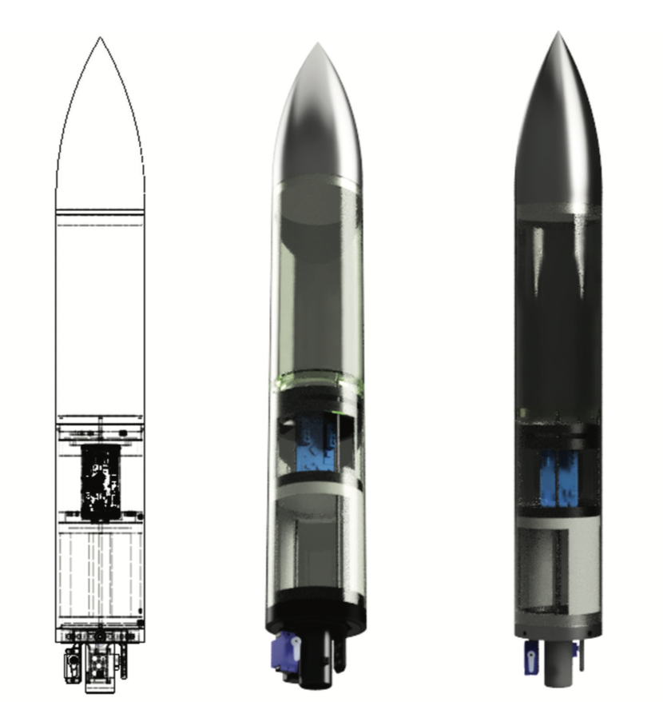
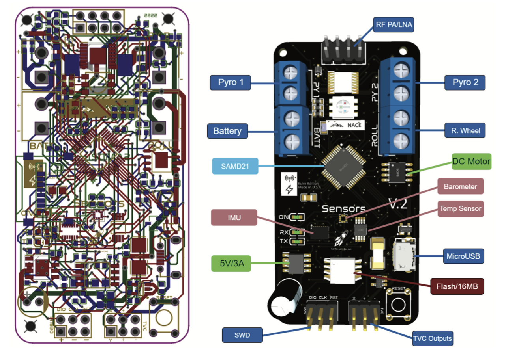
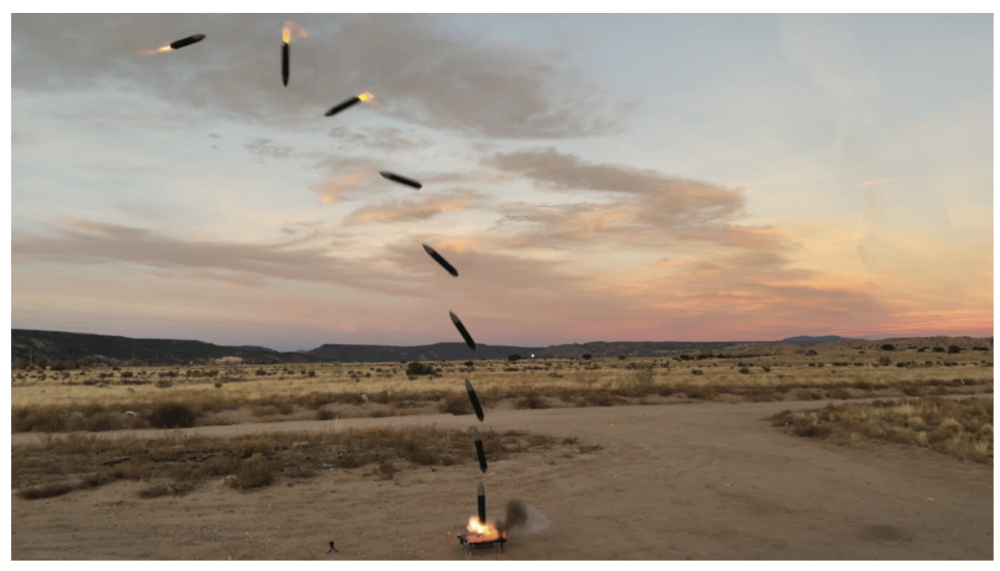

Developing a Control Algorithm and Simulation for Thrust Vector Controlled Rockets
Daniel Kim
Los Alamos High School
Andres Iturregui
Los Alamos High School
Abstract
The purpose of this project was to develop a robust and versatile control algorithm for Thrust Vector Control (TVC) rockets and to validate this control system using a simulation and a real-life model. A simulation created in MATLAB Simulink recreated the rocket's flight based on physical aspects such as mass moment of inertia, thrust curves, and drag coefficients. A physical model utilizing a 2-axis gimbal and a custom flight computer was built to cross-reference simulation results with actual flight data.
System Overview

The vehicle is a custom-designed 3D-printed rocket featuring a 2-axis TVC gimbal. Powered by an Estes D12-0 motor, the gimbal actuates up to ±5 degrees to actively stabilize the rocket during ascent. The system was designed to validate control theory concepts in a real-world, high-dynamic environment.
Control Theory
The guidance system utilizes a PID controller to manage orientation error. To avoid gimbal lock, the system uses Quaternions for 3D orientation tracking.
Sensor noise is managed via a Linear Kalman Filter, which fuses gyroscope and accelerometer data to estimate the state of the vehicle with high precision.
Avionics
A custom-fabricated PCB acts as the flight computer. It integrates a microcontroller, IMU (Inertial Measurement Unit), barometer, and servo drivers.
The flight software, written in C++, handles high-speed data logging, state automation (launch detection, abort sequences), and real-time control loop execution.

Custom Flight Computer PCB Design
Simulation & Validation
A Hardware-in-the-Loop (HIL) style simulation was built in MATLAB Simulink to tune the PID gains before flight. The simulation accounted for sensor noise, servo latency (50ms), and wind disturbances.

- Flight Data: The real-world flight experienced a pitch-over event due to mechanical misalignment, triggering the safety abort at 30 degrees tilt.
- Validation: Post-flight analysis showed the simulation accurately predicted the instability when real-world misalignment parameters were introduced, validating the model.
Cite this Project
title={Developing a Control Algorithm and Simulation for Thrust Vector Controlled Rockets},
author={Kim, Daniel and Iturregui, Andres},
journal={New Mexico Journal of Science},
volume={56},
pages={14--35},
year={2022}
}